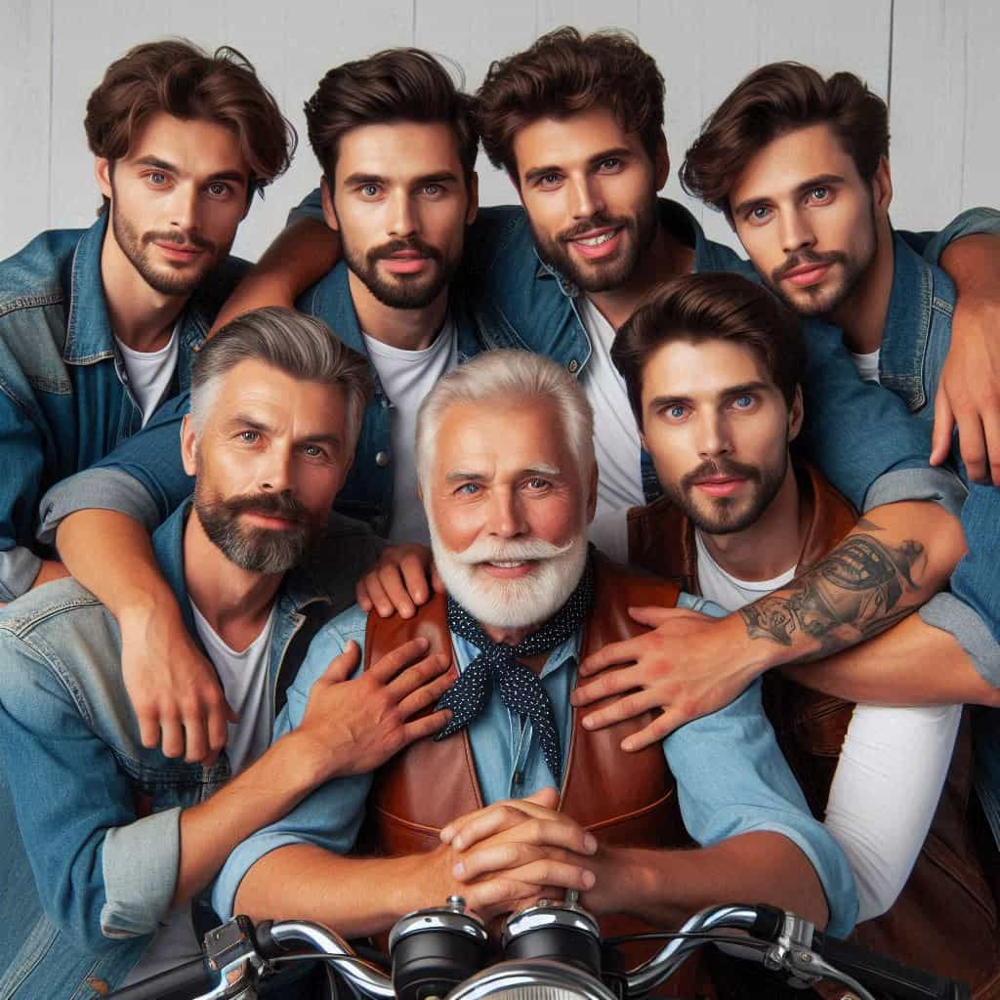
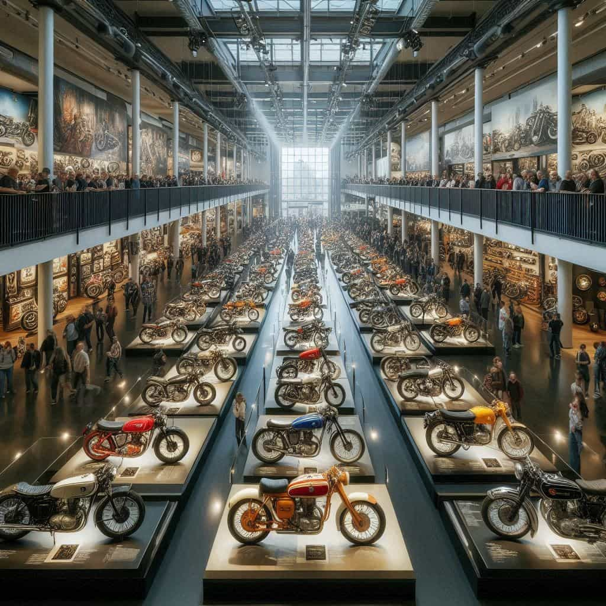

Como comenzó
En un pequeño taller de reparación de motocicletas antiguas, la familia García encontró su pasión. Lo que comenzó como un hobby de restaurar viejas glorias sobre dos ruedas, pronto se convirtió en un proyecto de vida. Con cada moto restaurada, crecía el deseo de compartir su amor por estas máquinas con el mundo. Así nació el Museo de la Moto, un lugar donde cada moto cuenta una historia y cada visitante se convierte en parte de su legado. El taller, ubicado en un rincón pintoresco de la ciudad, se llenaba de vida con el sonido de motores y el aroma a aceite y metal. Don Manuel, el patriarca de la familia, lideraba el equipo con su vasta experiencia y conocimiento. Sus hijos, cada uno con habilidades únicas, se unieron a la causa, aportando su energía y creatividad. Juntos, transformaron el taller en un santuario para las motocicletas clásicas. Con el tiempo, el pequeño taller se convirtió en un punto de encuentro para entusiastas de las motos de todas partes. La familia organizaba eventos y exhibiciones, atrayendo a visitantes que compartían su pasión. Cada moto restaurada era una obra de arte, y cada historia contada, un testimonio de dedicación y amor por el oficio. El Museo de la Moto no solo exhibe motocicletas, sino que también ofrece talleres y charlas educativas, inspirando a nuevas generaciones a apreciar y preservar estas joyas mecánicas. La familia García sueña con expandir el museo, creando un espacio aún más grande y accesible para todos los amantes de las motos. Con cada proyecto, buscan mantener viva la esencia de su taller original, un lugar donde la pasión por las motocicletas se convierte en un legado compartido con el mundo.
¿Quienes somos?
La familia García está compuesta por siete hombres, cada uno con su propia historia y personalidad. El patriarca, Don Manuel, es un hombre sabio de 75 años, conocido por su amor por las motocicletas antiguas. Su hijo mayor, Carlos, de 50 años, es el mecánico principal del taller y ha heredado la pasión de su padre. Luego está Juan, de 45 años, un talentoso restaurador que se especializa en motos clásicas. Pedro, de 40 años, es el encargado de la administración del museo, asegurándose de que todo funcione sin problemas. Andrés, de 35 años, es el organizador de eventos, siempre planeando nuevas exhibiciones y encuentros para los entusiastas de las motos. Miguel, de 30 años, es el encargado de las redes sociales y la promoción del museo, atrayendo visitantes de todo el país. Finalmente, el más joven, Luis, de 25 años, es un aprendiz entusiasta que está aprendiendo todos los secretos del oficio de su familia. Juntos, los García han convertido su pasión en un legado que comparten con el mundo.
Nuestra meta
El Museo de la Moto, nacido de la pasión y dedicación de una familia por las motocicletas antiguas, tiene una visión clara para el futuro. Su meta es convertirse en un referente internacional en la preservación y exhibición de motocicletas clásicas. Para lograrlo, planean expandir sus instalaciones, creando espacios interactivos donde los visitantes puedan no solo admirar las motos, sino también aprender sobre su historia y el proceso de restauración. Además, el museo busca establecer colaboraciones con otros museos y coleccionistas alrededor del mundo, intercambiando conocimientos y piezas únicas para enriquecer su colección. La familia García también tiene la intención de lanzar programas educativos y talleres, dirigidos a jóvenes interesados en la mecánica y restauración de motocicletas, fomentando así una nueva generación de entusiastas. En el ámbito digital, el Museo de la Moto planea desarrollar una plataforma en línea que permita a los aficionados de todo el mundo explorar su colección y participar en eventos virtuales. Esta plataforma incluirá visitas guiadas en línea, seminarios web y una comunidad interactiva donde los amantes de las motos puedan compartir sus experiencias y conocimientos. Finalmente, la familia García se compromete a mantener viva la esencia que dio origen al museo: la pasión por las motocicletas y el deseo de compartirla con el mundo. Con cada paso hacia el futuro, buscan honrar el legado de su taller original, asegurándose de que cada visitante se sienta parte de esta gran familia motera.